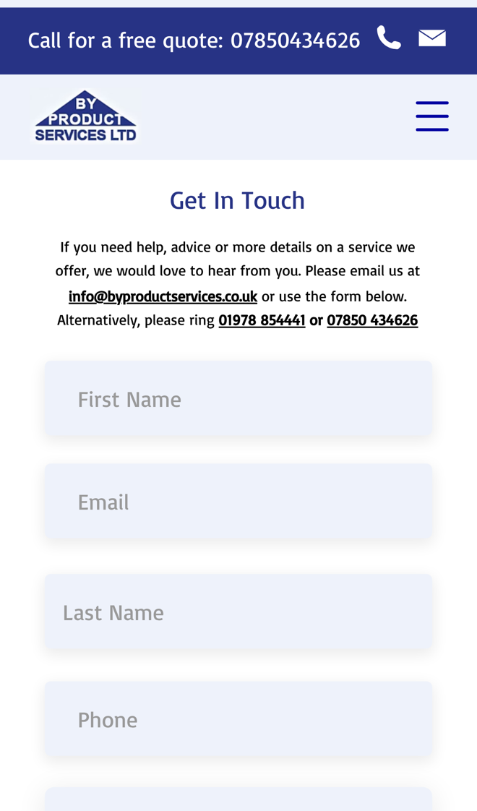

Byproduct Services: more regular work, fewer calls back
I went through your website on a phone, the way a homeowner with a septic tank or a pub with a grease trap would, and read your services, your contact page and the septic tank, cesspit and grease trap pages. Your service pages explain each job clearly. Where I think you'd win more regular work, and save time on the phone, is what happens when someone gets in touch and when their tank is next due.
What's already working
Three things I'd change
Remind customers when emptying is due
Your cesspit page says "cesspits need to be emptied monthly or quarterly", and your grease trap page says "between every 1-3 months". You can empty them "on a scheduled basis or at any other time", but nothing on the site lets a customer set up a regular slot or a reminder.
Regular emptying is work you've already won. When it relies on the customer remembering, some leave it until there's a smell or a backup, and some ring whoever comes up first.
- After each empty, the customer gets a text or email with the date their next one is due, on the timing you set for that tank.
- A week before, they get a reminder with a link to pick a day, or to say they'll call.
- Jobs due in the same area show up together, so you can plan runs and offer your neighbour discount.
Ask the right questions on your form
Your services page says "once you have contacted us we will be able to give you a quote via phone or email". Your contact form asks for a first name, last name, email, phone and a message, and nothing about the job itself.

To price a job you need to know what it is, where it is and how easy it is to reach. A blank message box usually means a call back to ask before you can give a price.
- The form asks which service, the type and size of tank if they know it, when it was last emptied, the postcode and access for the tanker.
- They can add a photo, and get a reply straight away saying what happens next.
- You get everything you need to quote in one go, by phone or email as you do now.
Text back the calls you miss
Your mobile, 07850 434626, is at the top of every page with "Call for a free quote", and you offer "24/7 availability" across North East Wales, Cheshire and Shropshire while your team is out on jobs.
Someone with a blocked drain or an overflowing tank wants help now. If the call isn't answered, they may simply ring the next firm.
- A missed call gets a text back within a minute: sorry we missed you, we're out on a job.
- The text links to a short form where they say what's wrong, their postcode and how urgent it is.
- You see every missed caller in one list, with what they need, and ring the urgent ones first.
Your website, answering for you
An assistant that answers the questions you get asked again and again, at any hour. These answers come only from your own website: your homepage, your About Us page and your grease trap page.
Anything it can't answer, it passes to you with the customer's details.
What happens next
For five local businesses I'm setting up one of these for free, in return for an honest review. Pick whichever would help most.
I'm Tom Williams and I run Tomoni-AI. If a 20-minute chat would help, reply to my email or give me a ring.
Call 07971 512158Email Tom